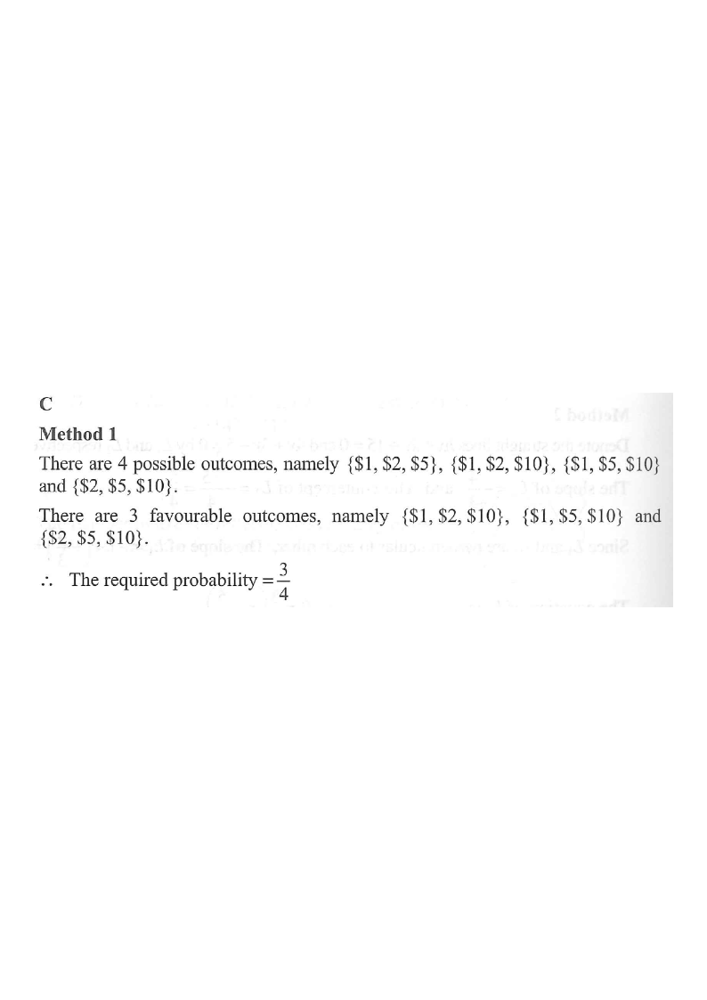

Step 1 · Show the four coins in Christine's pocket. She picks 3 of them.
Christine has one $1 coin, one $2 coin, one $5 coin and one $10 coin in her pocket. If Christine takes out three coins randomly from her pocket, find the probability that she gets at least $13.

Christine has four coins: $1, $2, $5, $10. She takes out 3 of them — equivalently, she leaves 1 coin behind.
Hint: "Take out 3 out of 4" is the same as "leave 1 out". This makes the counting much quicker.
Since she leaves one coin out, the number of possible outcomes equals the number of choices of the coin to leave out:
$${}^{4}C_{1}=4$$
The 4 possible outcomes are $\{1,2,5\}$, $\{1,2,10\}$, $\{1,5,10\}$ and $\{2,5,10\}$.
Hint: Counting the left-out coin gives 4 outcomes instead of ${}^{4}C_{3}=4$ — same result either way.
Add up each triple:
$\{1,2,5\}\to 1+2+5=8$ · $\{1,2,10\}\to 1+2+10=13$
$\{1,5,10\}\to 1+5+10=16$ · $\{2,5,10\}\to 2+5+10=17$
Hint: The condition "at least $13" means total ≥ 13.
Compare with $13$:
$8 < 13$ ✗ · $13 \ge 13$ ✓ · $16 \ge 13$ ✓ · $17 \ge 13$ ✓
Hence the favourable outcomes are $\{1,2,10\}$, $\{1,5,10\}$ and $\{2,5,10\}$, i.e. 3 favourable outcomes.
Hint: The only failing case is $\{1,2,5\}$ (total $8), so $4-1=3$ successes.
For equally likely outcomes,
$$P(\text{at least } \$13)=\frac{\text{no. of favourable outcomes}}{\text{total no. of outcomes}}=\frac{3}{4}$$
Hint: Alternatively, $P(\text{fails})=P(\{1,2,5\})=\frac{1}{4}$, so $P(\text{at least } \$13)=1-\frac14=\frac34$.
Question. Christine has one \(\$3\) coin, one \(\$4\) coin, one \(\$7\) coin and one \(\$15\) coin in her pocket. If she takes out three coins randomly, find the probability that she gets at least \(\$25\). A. \(\dfrac{1}{4}\) B. \(\dfrac{1}{2}\) C. \(\dfrac{3}{4}\) D. \(1\) [1 mark]